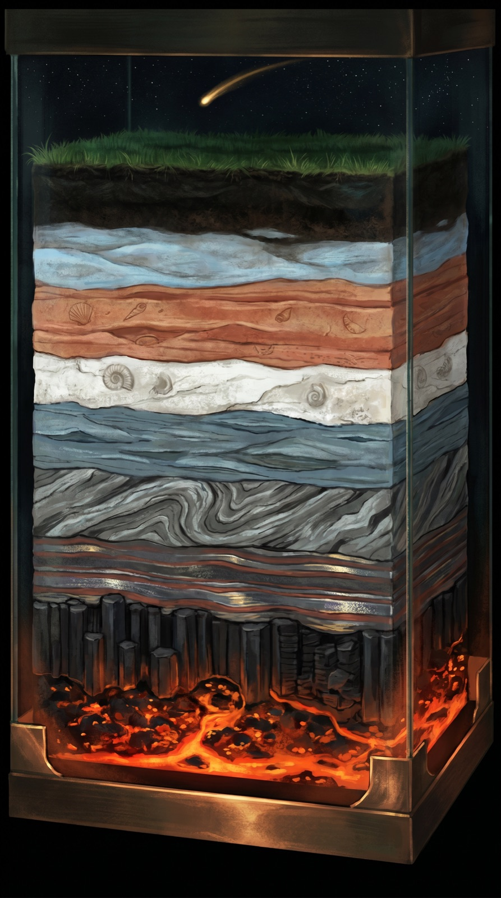
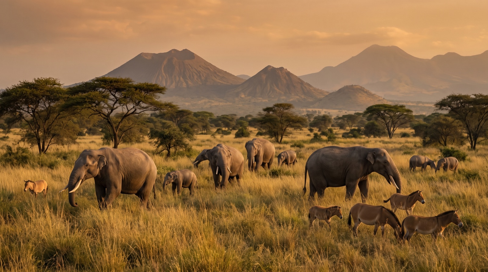
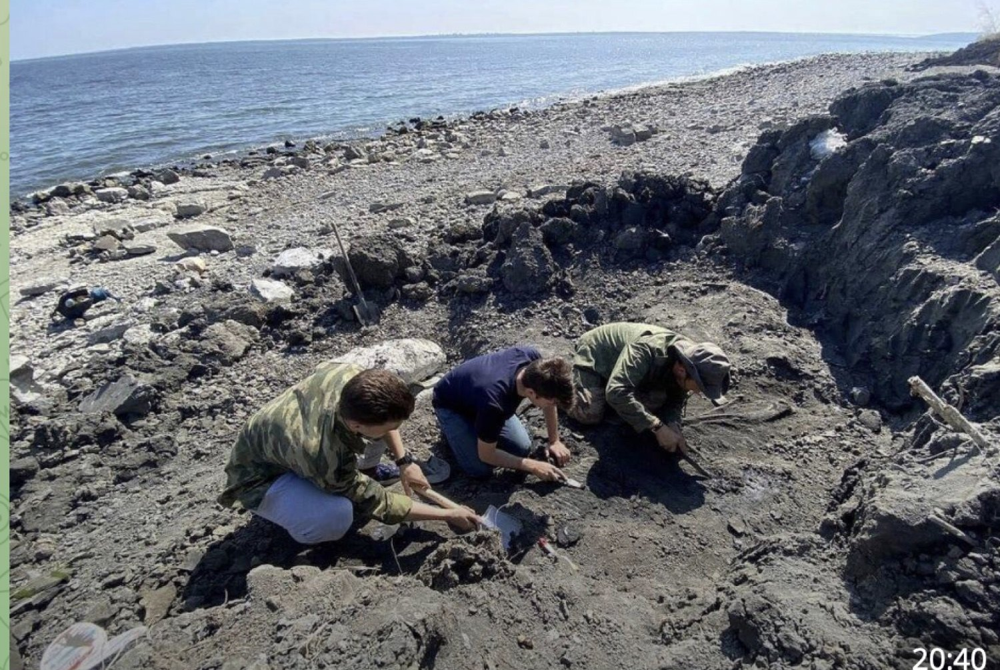
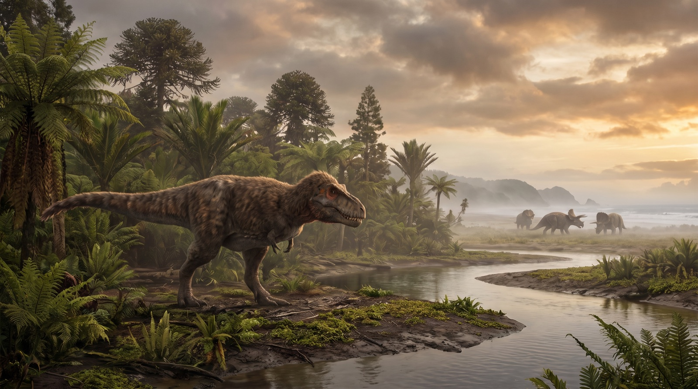
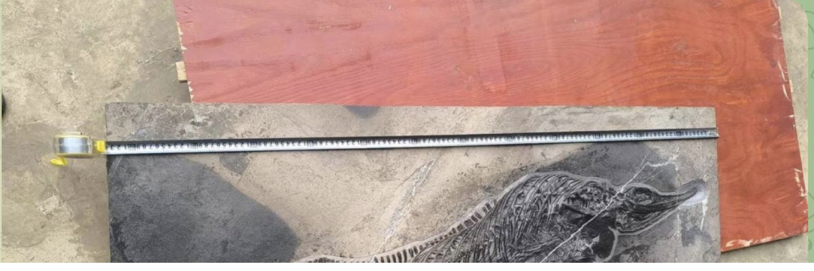
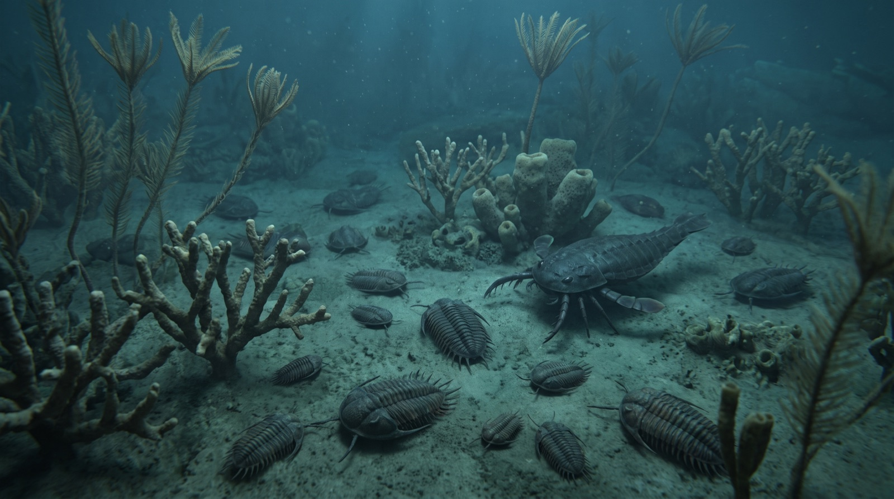
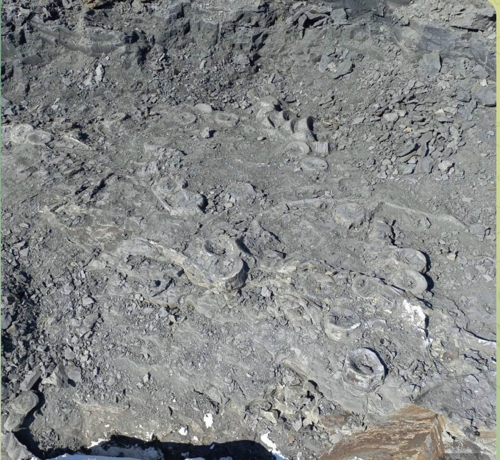
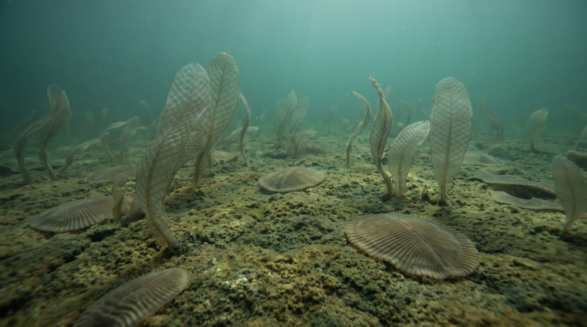
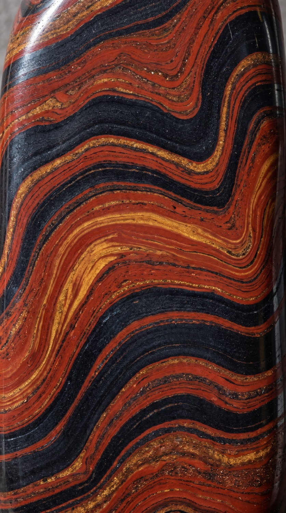

Спуск
сквозь эры
Под ногами — архив планеты. Мы спускаемся сквозь эры фанерозоя к скрытому времени докембрия. Слева — как они жили, справа — как мы их находим сегодня.
Листайте вниз · сквозь 4,6 млрд лет

Под ногами — архив планеты. Мы спускаемся сквозь эры фанерозоя к скрытому времени докембрия. Слева — как они жили, справа — как мы их находим сегодня.






541 миллион лет назад. Выше — фанерозой, «явная жизнь»: всё, что оставило раковины и кости. Ниже — криптозой, «скрытая жизнь»: почти четыре миллиарда лет планета жила без свидетелей, которых можно найти в породе.


Свидетели каждой эры — в каталоге дома: атрибутированные, оправленные, с паспортом происхождения.
 Зуб мегалодона
Зуб мегалодона Зуб тираннозавра
Зуб тираннозавра Череп трицератопса
Череп трицератопса Аммонит
Аммонит Трилобит Drotops
Трилобит Drotops Минералы Земли
Минералы Земли Палласит Сеймчан
Палласит Сеймчан